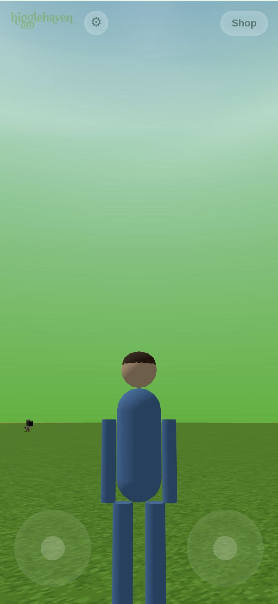
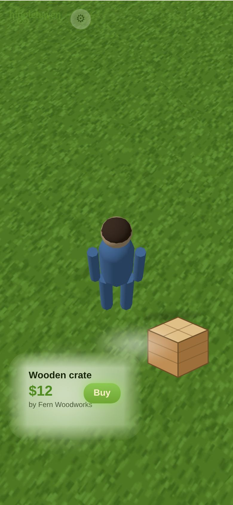
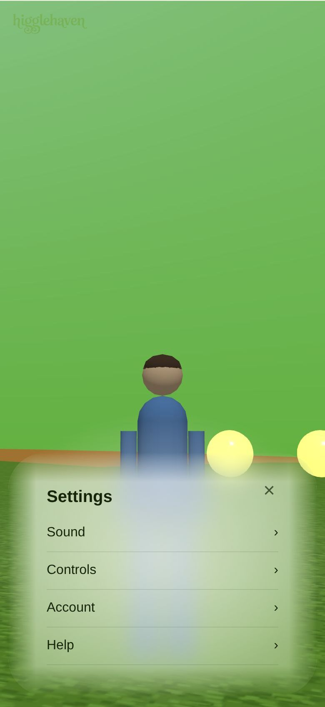
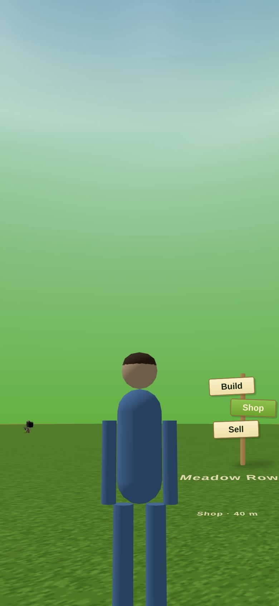
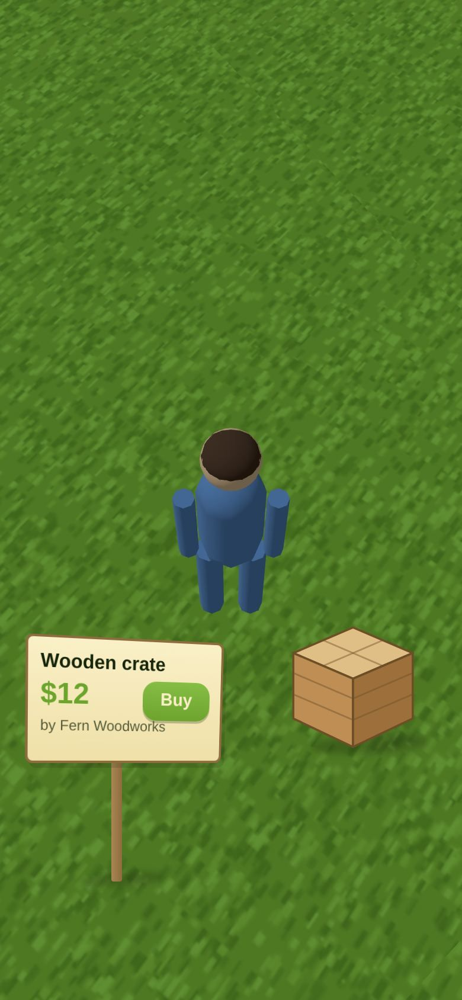
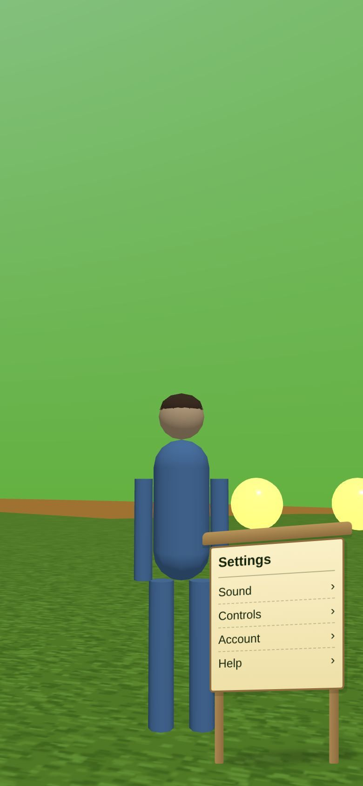
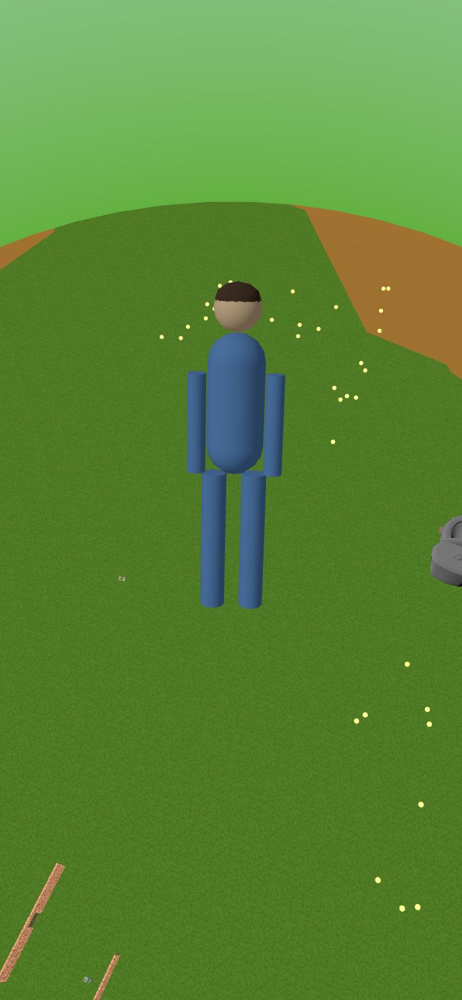
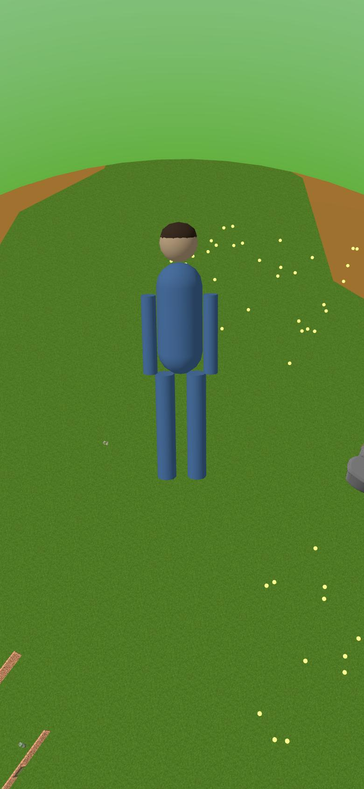

A Fog and glass



Soft translucent shapes condense out of the world's own fog and thin away again; almost no borders; controls fade when idle.
Open AB Signs in the world



Information lives in the scene: a sign on a stake by the product, a board you walk up to for settings, words laid on the ground. The screen stays nearly empty.
Open BC One bud



The whole interface folds into one small living thing in a corner that opens into a few petals when tapped; everything else is gestures on the world.
Open C